- Overview
- Working with Events
- Adding an Event to the Process Map
- Editing the Label of an Event
- Deleting an Event from the Process Map
- Start Events
- Intermediate Events
- Intermediate Throwing Event
- Intermediate Catching Events
- End Events
- Events - Example
- Events Troubleshooting
Overview
An event is something that occurs during the course of a process. These events usually require or permit an action, which has an impact on the implementation of a process.
Inside the Process Map of ProcessMaker, it is possible to find Start Events, Intermediate Events and End Events. Though most of them are currently available in the graphical process designer, only the following events are supported by the ProcessMaker engine:
| Start Events | Intermediate Events | End Events | |
| Empty | Throwing Events | Catching Events | Empty |
| Timer * Enterprise Edition | Email * Enterprise Edition | Timer * Enterprise Edition | Email * Enterprise Edition |
| Receive Message | Send Message | Receive Message | Send Message |
Inside the Process Map, the event shapes are in the shapes toolbox at the top of the map.

The first two event shapes in the toolbox are the start events: the "Empty Start Event" and "Start Timer Event".
The next two shapes are the intermediate events: the "Intermediate Email Event" and "Intermediate Timer Event". The last two shapes are the "Empty End Event" and "End Message Event".

Working with Events
Events are used in the process design to indicate that something will happen at some point during the execution of the process. Thus, take into account the following information:
- Use Start Events to start a process.
- Use Intermediate Events to indicate that something will happen between the start of a process and the end of the process.
- Use End Events to terminate the flow of a process.
Adding an Event to the Process Map
All the event shapes available in the shapes toolbox of the Process Map can be dragged and dropped onto the process map.
For example, to add a intermediate send event with a intermediate receive event:
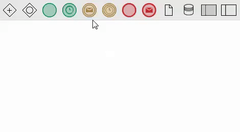
From version 3.0.1 and higher, use the Quick Toolbar to easily add elements to the process map. This option allows the user to add intermediate events and/or end events directly from the process map by clicking on objects such as tasks and sub-processes, gateways and other events. To add a Timer intermediate event, drag the Timer Event from the shapes toolbox and drop it onto the Process Map. Change the type of intermediate event by right clicking on its icon and seleting another type from the Intermediate Event Type context menu. Use the Quick Toolbar to add a flow between the event and other elements on the process map. Likewise, to add start events, drag the start event from the shapes toolbar and drop it onto the process map. Start events are not available in the Quick Toolbar their function is to start a process, so no flow from another process object can be continued by a start event.
Editing the Label of an Event
By default, events added to the Process Map do not have a label. To add and edit a label, right click on the element and select the option Edit Label.

The second way to edit a label is to double click on the element, which will enable editing of the text.
Note: The options in the event context menu vary according to the type of event.
Deleting an Event from the Process Map
To delete an event from the Process Map, right click on the element and select the Delete option from the event context menu.

Note: The options in the event context menu vary according to the type of event.
The second way to delete events is to click on the element to display four white little squares at the corners. This means that the element has been selected. Press the DEL key to delete it.
As of version 3.0.1, the third way to delete an event from the Process Map is to use the Quick Toolbar. After clicking on the event, click on the garbage icon to delete the event.

Start Events
These events start the process and begin the workflow. Within the design of a process, the start event is usually the first object in the entire design; after the start event, the process flows top-down or from left to right.
Even though there are only two types of start events available in the shapes toolbox, all types of start events are available to be added to the process design.
Take into account that some of these start events are only for design purposes in the Process Map. The ProcessMaker engine only supports the Empty, the Receive Message and the Timer (from version 3.0.1) start events. To change the type of start event inside the design, right click on any of the start events and select the option Start Event Type.

Empty (None)
An empty event simply starts the workflow of the process.

When running a case, the start event will initiate the first task of the process.

If a process needs to begin with different activities, it is possible to design processes with multiple start events. For example, in the process to request supplies shown below, the user can request credit in the"Request Credit" task, or directly request the supply in the “Request Supply” task.

It is also possible to assign the same user to multiple starting tasks. For example, a user who handles billing might need to decide whether to send a bill, contact the client or consult the supervisor in the following process.

When starting a new case, the user will be presented with the option to select the task where the case should begin. In the list of available processes, the starting task will be listed in parentheses after the process name.

Web Entry
Empty start events have the Web Entry option available inside their context menu. To learn more about this option in ProcessMaker version 3.0, check out this documentation.
Receive Message
This type of start event is also supported by the ProcessMaker engine. Use this event when a message, sent by another process, contains data that triggers the start the current process flow. Inside ProcessMaker, this event receives messages from the Send Message Intermediate Event and the Message End Event.
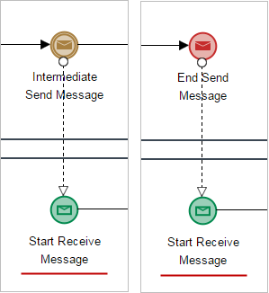
As this event waits specifically for a message sent by another process, it is not possible to manually start any case of a process that has this start event. For example, for the two processes of the following design:

Even though the tasks of both processes already have users and steps assigned, notice that the second process only starts when a message is sent from Send Contract (the send message intermediate event) of the first process.

The assigned users receive the first task of the second process in their inbox only after the first process sends the message that triggers the start of the second process.
Configuring the Receive Message Start Event
Take into account that to work with this type of event, the message received must have already been created in the Message Types option in the Process Objects toolbox. To configure the event, right click on it and select the Properties option from the event context menu.

Note: According to BPMN standards, these events must be part of separate processes represented by different pools in the Process Map.
The modal window that opens has the following characteristics:

- Message Type: Select the Message Type that will trigger the start of the process from the dropdown menu. The message type selected in this field will define the input variables needed to start the first task of the process. The event that will send the message must have the same message type defined inside its configuration, so when the first process arrives at this event it will send the value of the variables to the start event, which will trigger the first task and send the values.
- Store Value In: In this column, define the variables in the current process that will store the value field messages sent from the other process. Each message field can be assigned to an existing correlative variable in the current process. To do this correlation, click on Edit and the Message Content section will display:

Select the variable in the Store value in field by using the @@ button or entering the name of the variable with the @@ prefix.

- Name Value: This column shows the name of the message field used to store the value of the message sent from the other process. Take into account that these values are not variables used by the first process inside its forms, triggers, input or output documents. These variables are used exclusively by the message between the processes (which means that the sending event should define the variables that will be sent in the message in its properties as well).
- Correlation Value: The correlation value defines the unique ID that will relate both events: the send message event and the receive message event.
This value must be the same in both events. The correlation value must be either a fixed value, such as
correlation = 62521362355f06c223f95d8008656248(for example), or an unchangeable variable used in the project whose value does not change for both processes, such as@@USER_LOGGED(in the case the processes are assigned to the same user). Previously created process or system variables can not be used in this type of process since this event starts the flow of the process, and those variables do not yet have a defined value.
Finally, save the changes by clicking on Save at the right side of the section.
Receive Message - Running Cases
When running cases of processes that have the Receive Message start event configured to start the flow of the second process, it is necessary to execute messageeventcron.php to start pending cases of the process that starts when triggered by a timer start event.
This file is located at:
Linux:
Windows:
To start pending cases of the Receive Message start event, open a terminal, go to the file's location and execute the following command:
For more information, see Executing Cron Scripts.
For example, in the following design:

After executing "Task 5" of the first process, the Send Message intermediate event will send a message to the Receive Message start event to start the execution of the second process in "Task 6". To do this, both events are configured as follows:

Use the Message Type "MessageType2" already created in the process.
Then, set the Correlation Value to "id = 123456789" in both events.
Start a case of the first process. After "Task 5", the send message intermediate event will send the message "MessageType2" to the receive message start event in the second process to start a new case of that process.
To start the pending cases of the second process run messageeventcron.php. The message shown should look like the following:

To work with the pending case, go to the ProcessMaker inbox and open the case.
Note: The process provided in this example is only presented to explain how the event functions when running cases. For a real-world example, see the example at the end of this page.
Timer Start Event
The Timer start event automatically starts new cases at specified times. These cases can be programmed to be started on an hourly, daily, weekly or monthly basis, or one time only.
To add a Timer start event to the design, drag and drop a Timer start event from the Shapes toolbox:

If there is already a start event in the process, right click on the event and select Start Event Type from the context menu, then select the Timer option.
A process containing a Timer start event must have at least one task. The first task after a Timer start event needs to be assigned to at least one user. Timer start events do not work correctly if the initial task is a script task.
In the following process, the Timer start event will automatically start cases at the "Audit Monthly Purchases" task when the event is executed by the timereventcron.php script.

To manually start cases of this process using the ProcessMaker graphical interface, a normal start event can be added to the first task, in addition to the Timer start event. Any user assigned to the "Audit Monthly Purchases" task can log in to ProcessMaker and manually start a case.
Note: The first task in a case started with a Timer start event will have a delegation index of 2, because the event is considered the first step of the task.
Configuration
Note: Times must be in UTC time when the server is in UTC time.
To configure a Timer start event, right click on the event and select Properties from its context menu. The following configuration will display:

Select how often the case will be started:
- Hourly: A case will be created on an hourly basis.
Enter the minutes of the hour when a new case will be started.
For example,
20means a new case will be started twenty minutes after every hour in the day. Also define the Start Date when new cases will start being created. If new cases should stop being created after a specified date, then enter the optional End Date.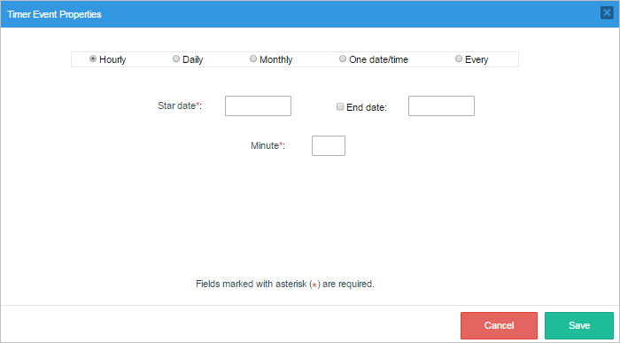
- Daily: A new case will automatically be started on a daily basis.

Where:
- Start Date: Select the date when new cases will start to be created.
- End Date: Select a date when new cases will stop being created. If no date is selected, then new cases will be created forever.
- Hour: Select the hour when the new case will start.
- Minute: Select the minute of the hour when the new case will start.
- Select the day(s) of the week: Select the days of the week when new cases will automatically start.
- Monthly: A new case will automatically be started on a montly basis.

Where:
- Start Date: Select the date when a new case will be scheduled to start every month.
- End Date: Select the date when cases will stop being scheduled. If no date is selected, then cases will continue being scheduled forever.
- Day: Select the day when the case will start. Days are represented in numbers where 1 corresponds to Monday.
- Hour: Select the hour when the case will start.
- Minute: Select the minute when the case will start.
- Of the month(s): Select in which months cases will be automatically started.
- One date/time: A case will be automatically started only once on a particular date or time.

Click inside the Date time field and the following calendar will be displayed:

Choose the specific date and time when the case will start.
- Every: A case will be created automatically EVERY hour. Also, it is possible to configure the hour, minutes and seconds by using decimal points, meaning that when the minute is set, the format in the Minute box is 00.00, and if seconds need to be set, just enter 20.01 into the Minute box for twenty minutes and one second, etc.
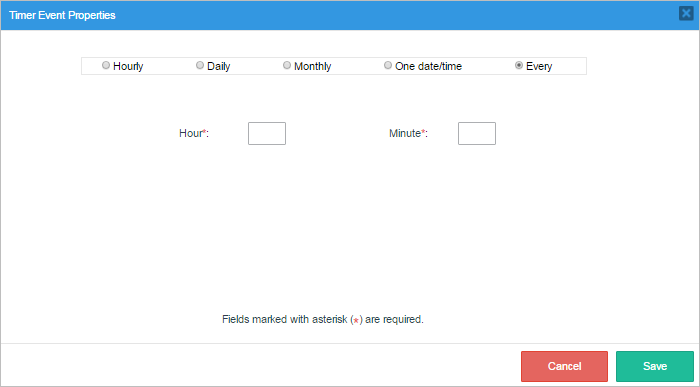
Start Timer Event - Running Cases
When running cases of processes that have the Timer start event configured to start the process, it is necessary to execute the timereventcron.php script on the ProcessMaker server to start any pending cases of the event. This file is located at:
Linux:
Windows:
To start pending cases that start with a Timer start event, open a terminal, go to the file's location, and execute the following command:
For more information, see Executing Cron Scripts.
Note: The events will continue only after the timereventcron.php script is executed, even if they are overdue.
The message shown in the terminal will look like the following image:
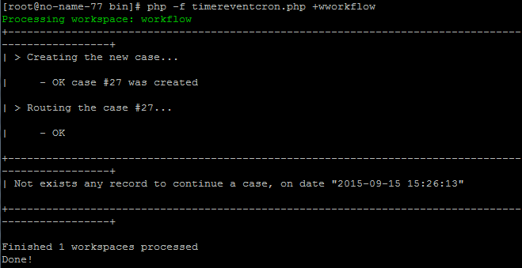
The new case should appear in the user's inbox in ProcessMaker at the second task in the process.
Note: Make sure that the ProcessMaker Time Zone is the same as the date.timezone set in the server's php.ini file. See Events Troubleshooting below.
Conditional
The Conditional start event is not supported by the ProcessMaker engine, use it only for design purposes. Note that the process and the task related to this start event will not be listed in the New Case folder.

Use this event if the start of the process depends on the evaluation of a condition or a rule. This condition must be independent of the process (es). The process will start if and only if the evaluation of said condition evaluates to TRUE.
Signal
The Signal start event is not supported by the ProcessMaker engine, use it only for design purposes. Note that the process and the task related to this start event will not be listed in the New Case folder.

Use this start event in the process design if a signal is received from another process that triggers the start of the process. This event is different from a Receive Message Start Event because the latter needs a specific recipient, while a Signal start event can be triggered by anyone who receives the message and acts on it, which means it has multiple recipients.
Intermediate Events
An intermediate event represents a point of time at which some matter occurs within a process that is being executed, i.e. an interval between the start of an individual process and its end. Thus, an intermediate event itself does not start or terminate a process. Intermediate events evaluate conditions or situations that cause events, or they fulfull conditions that start another process. In other words, intermediate events have characteristics of both catch and throw events and are represented by a double border circle.
ProcessMaker 3.0 has implemented two types of intermediate events:
- Throwing Events
- Email (Catching Events)
- Send Message
- Catching Events
- Timer (Throwing Events)
- Receive Message
Intermediate Throwing Event
In version 3.0 of ProcessMaker, Intermediate Throwing events are represented by a double circle with a dark envelope inside it. It is located in the shapes toolbox as an intermediate email event.
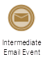
During the execution of a process, different events, such as messages, can be thrown using this event. Intermediate throwing events are caught by catching events, but are processed asynchronously. This means that the process that contains the throwing intermediate event is not marked as completed until the message is "caught" by another process.
Inside the Process Map it is possible to add the following intermediate throwing events:
Email Message
Available Edition: Available only in the Enterprise Edition.
Use this event to send a notification during the execution of a process. To add an email message event, drag and drop the intermediate event directly from the shapes toolbar and connect it to the other elements in the process, or add an intermediate event from the Quick Toolbar option of an elements and change its type to "Email Message" from the event context menu. Right click on the event, select the Properties option and configure the event in the following window:

Where:
- From: Required Field. Select the email address from where the email will be sent. The dropdown lists all the available email accounts registered in the configuration of the workspace. See this documentation to learn more about it.
- To: To add an email address to this field, it must be a string or a process @@variable (which could specify a group of emails addresses). At least one email address is required. Use commas to separate more than one email address.
Note: As of version 3.0.1.4, the issue when emails are not sent when using @@ variables is fixed.
- Subject: Not Required. The email subject.
- Content: Required Field. The body of the email that contains the details of the email. Press CTRL + @ to display the list of available variables in the process. To learn more about this editor read this documentation.
- Cancel: Cancel the configuration of the email. All changes will be lost.
- Save: Save the changes of the email. Note that the email is not sent with this action. The email is sent when the case is executed.
When running cases, this event does not need any additional configuration or the execution of any cron in ProcessMaker. It automatically sends the email when this event is reached in the flow.
Email Message - Known Issues
Take into consideration the following known issues:
-
If working with ProcessMaker 3.0.4, take into consideration that if a process design contains an Intermediate Email Event after a Parallel gateway (as in the image below), an error may be displayed randomly when the second case is executed.

This is a known issue that has been fixed in later versions.
-
There is a limitation when using the Intermediate Email Event after an Intermediate Timer Event; the process will NOT work properly on designs such as:

Workaround: To fix this limitation, the Intermediate Email Event can be replaced by a script task, which can send the email with a trigger.

Notice that if the Intermediate Email Event is executed before the Intermediate Timer Event, the process will work correctly.

Send Message
Use this type of event in the process design to send a message during the execution of the process to another process that requires the message. The ProcessMaker engine catches this message using a receive message intermediate event or a receive message start event. These events must be in separate processes represented by different pools in the Process Map.

The message must have already been created with the Message Types option, and it must have already been configured in its properties.

The modal window that is opened has the following characteristics:
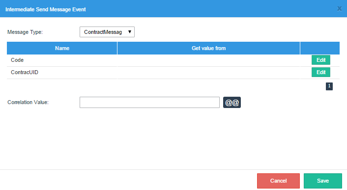
- Message Type: Select the message type from the dropdown menu that will be related to the send message event. The message type selected in this field will define the variables sent to the other process. The event that will receive the message must have the same message type defined inside its configuration.
- Name: This column shows the name of the message field used to store the value of the message that will be sent to the other process. Take into account that these values are not variables used by the process inside its forms, triggers, input or output documents. These variables are used exclusively by the message between the events.
- Get Value from: In this column, define the variables used in the process where the values will be obtained and used by the message that will be sent to the other process.
- Correlation Value:
Define the unique ID that will relate both events: the send message intermediate event and the receive message intermediate event or message start event.This value must be the same in both events. The correlation value must be either a fixed value, such as
id = 123(for example), or an unchangeable variable used in the project whose value does not change for both processes, such as@@USER_LOGGED(in the case the processes are assigned to the same user).This definition will create the case variable that can be used inside the process. Previously created process or system variables can not be used in this type of process since this event starts the flow of the process, and those variables do not have yet a value defined.

Send Message - Running Cases
As this event only sends messages to other events, the flow in the process continues normally after this event has sent the message. To learn how to continue the processes that "catch" the message after the message has been sent, read about catching events in the Running Cases section.
Note: To view an example of how to run a case that contains this event, see the example at the end of the page.
Signal Intermediate Event
Use this element to send a notification from one process to another. As this event is not supported by the ProcessMaker engine, use it only for design purposes.

Intermediate Catching Events
In version 3.0 and 3.1 of ProcessMaker, these events are represented by the timer event in the shapes toolbox.
To add an intermediate catching event to the design on the Process Map, it is necessary to drag and drop it from the shapes toolbox, since it is not available in the Quick Toolbar.
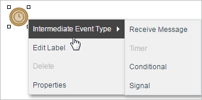
The process awaits an event, e.g. a message, and continues when the event is "caught". An Intermediate Timer event cannot be thrown, it can only be caught as the time is independent from the sending process.
Inside the Process Map it is possible to add the following intermediate events. However, take into account that the ProcessMaker engine only supports the receive message and the timer events in the execution of a process, even though the rest of the receive message intermediate events are also available for designing.

Receive Message
The Receive Message event is represented by the Intermediate Timer event icon in the shapes toolbox. To add it to the process design, first drag and drop an Intermediate Timer event. Then, right click on its icon and select the Receive Message option in the Intermediate Event Type menu. Note that the icon of the event element will change.

Use this type of intermediate event to receive a message sent from another process. This element is used to pause the process flow until the message arrives. Inside the ProcessMaker engine, this event receives messages from the Send Message intermediate event and the Send Message end event.
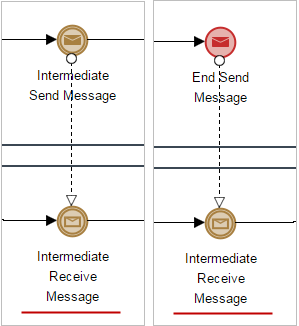
Remember that according to BPMN 2.0 rules, messages can only be sent between two different processes which, in ProcessMaker, are represented by two different pools (to view an example see the example at the end of this page). To create a relationship between two processes, both of them have to be configured properly.
Configuring the Receive Message Event
Take into account that to work with Receive Message events, the messages received must have been created with the Message Types option and the event properties must be configured properly.

The configuration of the event is done inside the modal window that opens, which has the following characteristics:

- Message Type: Select the Message Type that will be related to this intermediate event from the dropdown menu. The message type selected in this field will define the input variables needed to continue the flow of the process. The event that will send the message must have the same message type defined inside its configuration. When the message from the first process arrives at this event, it will throw the value of the variables to the receive intermediate event. The second process will then use the variables to continue the case.
- Store Value In: In this column, define the value of the process variables that will receive the message from the other process. Each variable in the message can be assigned to a correlative existing variable in the process. To correlate these variables, click on Edit and the Message Content Section will be displayed:

Select the variable where the value will be stored in the other process by using the @@ button or entering the name of the process with the @@ prefix.
- Name Value: This columns shows the name of the variable used to store the value of the message sent from the other process. Take into account that these values are not variables used by the first process inside its forms, triggers, input or output documents. These variables are used exclusively by the message between the events.
- Correlation Value: The correlation value defines the unique ID that will relate both events: the send message event and the receive message event.This value must be the same in both events.
The correlation value must be either a fixed value, such as
id = 62521362355f06c223f95d8008656248(for example), or an unchangeable variable used in the project whose value does not change for both processes, such as@@USER_LOGGED(in the case the processes are assigned to the same user). Previously created process or system variables can not be used in this type of process since this event starts the flow of the process, and those variables do not yet have a defined value.
Receive Message Event - Running Cases
When running cases of processes that have Receive Message intermediate events configured to continue the flow of a second process, it is necessary to execute the messageeventcron.php script on the ProcessMaker server to continue pending cases of the event. This file is located at:
Linux:
Windows:
To continue pending cases of this event open a terminal, go to the file's location and execute the following command:
For more information, see Executing Cron Scripts.
Note: To view an example of how to run a case containing this type of event, see the example at the end of this page.
Intermediate Timer Event
The intermediate timer event causes a delay in a flow depending on the time defined in the configuration of the process. This event is a "catching" event since it must wait for a specified time to trigger and continue the flow. For instance, if a user does not pay the bills within 30 days a timer intermediate event will trigger and send notification to them once 30 days has been reached.
To add an intermediate timer event, drag and drop the event to the Process Map and connect it to the related tasks in the process. See the example workflow below to get an idea of how an intermediate timer event works:

Intermediate Event Configuration
Note: Times must be in UTC time when the server is in UTC time.
Right click on the event and the configuration window will open:

Where:
- Wait for: Select the number of minutes, hours, or days the flow must wait. At least one of these fields must be selected (minute, hour or day). The wait status begins when the flow arrives at the intermediate timer event.
- Wait until the specific date/time: Select a specific date and time the flow must wait until.

Intermediate Timer - Running Cases
When running cases that use this event to continue the flow of the process, it is necessary to execute the timereventcron.php script on the ProcessMaker server to continue pending cases that contain this event. This file is located at:
Linux/UNIX:
Windows:
To continue pending cases, go to the file's location and execute the following command:
For more information, see Executing Cron Scripts.
Note 1: The events will continue only after the timereventcron.php script is executed even if the cases are overdue.
Note 2: Make sure that the ProcessMaker Time Zone is the same as the date.timezone set in the server's php.ini file. See Events Troubleshooting below.
Intermediate Conditional Event
Use this event to indicate a point in the process where a condition will be evaluated. If the condition evaluates to TRUE, the flow will continue. If it evaluates to FALSE, then the case will be stopped.
Conditional intermediate events are not yet supported by the ProcessMaker engine, so they are currently used only for design purposes.

Intermediate Signal Event
Use this event to send a notification from one process to another. This event is not yet supported by the ProcessMaker engine, so use it only for design purposes.

End Events
This event terminates the process, so the case ends and its status is set to "completed". If the case has multiple parallel paths, then all paths in the case will be ended. It is recommended to place the end event at the bottom of the Process Map if using a top-down design or on the right hand side of the Process Map if using a left-to-right design.

Inside the Process Map it is possible to add the following Receive Message intermediate events:
Take into account that the ProcessMaker engine only supports Empty (none) end events. The other end events have been added only for design purposes. To select the type of end event inside the design, right click on the end event and select End Event Type.
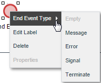
Empty (None) End Event
A process can contain multiple end events. For example, in the following equipment maintenance process, the process ends either when the equipment check concludes that the equipment is OK or when new equipment is bought. If the equipment is refurbished, the process will loop to recheck the equipment.

Message End Event
This event terminates the process and sends out a message to the Receive Message start event and the Receive Message intermediate event. It is represented by a circle with a bold border around a red envelope.

A process can contain multiple end events and message events. For example, the following process is used to decide whether to produce a new product. If the new product will be produced, then a brochure is created and the process ends when the brochure is sent out in an email. If the product won't be produced, then the process immediately ends without producing a brochure.
Configuring the Message End Event
To work with message end events, the messages sent must have been already created with the Message Types option. To configure an end event, right click on the event and select Properties from its context menu.

The dialog box that opens has the following characteristics:

- Message Type: Select the Message Type from the dropdown menu. The message type selected in this field will define the variables sent to the other process. The event that will receive the message must have the same message type defined inside its configuration.
- Name: This column shows the name of the variable used to store the value of the message sent from the other process. Take into account that these values are not variables used by the first process inside its forms, triggers, input or output documents. These variables are used exclusively by the message between the events.
- Get Value From: In this column, define the variables used in the process where the values will be obtained and used by the message that will be sent to the other process.

- Correlation Value: The correlation value defines the unique ID that will relate both events: the send message event and the receive message event.This value must be the same in both events. The correlation value must be either a fixed value, such as
IUD = 98765433(for example), or an unchangeable variable used in the project whose value does not change for both processes, such as@@USER_LOGGED(in the case the processes are assigned to the same user). Previously created process or system variables can not be used in this type of process since this event starts the flow of the process, and those variables do not yet have a defined value.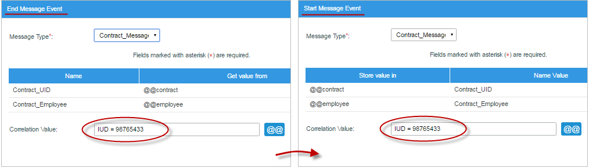
Message End Event - Running Cases
As this event only sends messages to other events, the flow in the process ends after this event has sent the message. To learn how to continue the other processes configured to receive the message, see the Running Cases section.
Note: To see an example of how to run a case of this event, go to the example at the end of the page.
Email Message End Event
Available Edition: Available only in the Enterprise Edition.
An Email Message end event sends a notification as soon as the flow finishes. To add an email message end event, drag and drop its icon from the shapes toolbox, then connect it to the related tasks. Right click on the task and select Properties. The following interface will appear:

Where:
- From: Required Field. Lists the available email accounts registered in the workspace configuration in the dropdown menu.
- To:
To add an email address to this field, it must be a string or a process @@variable (which could specify a group of emails addresses). At least one email address is required. Use commas to separate more than one email address.
Note: As of version 3.0.1.4, the issue when emails are not sent when using @@ variables is fixed.
- Subject: Optional. The email subject.
- Content: Required Field. The body of the email that contains the details of the email. Press CTRL + @ to display the list of available variables in the process.
- Cancel: Cancel the configuration of the email. All changes will be lost.
- Save: Save the changes of the email. Note that the email is not sent with this action. The email is sent when the case is executed.
Note: Use this element to send emails and end the flow of the process rather than using two different elements, one to send an email and another to end the flow (which is currently not supported by the engine).
Error
Use an Error End Event in the process design to indicate that during the flow of the process there might be an error that could affect the normal execution of the flow and throw an exception. This element will indicate that the end of the process at that point is due to an exception and caught by that event.
As this event is not supported by the ProcessMaker engine, use it only for design purposes.
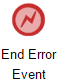
Signal End Event
Use this end event in the process design to indicate that a signal will broadcast when the end of the process has been reached. The signal sent by the process can be received by any other process that needs that signal to trigger an event. As this event is not supported by the ProcessMaker engine, use it only for design purposes.

Terminate
Use this event in the process design if there are parallel tasks executed at the same time, and the completion of one of them is enough to end the entire flow of the process. Thus, this event will end immediately all flows in the process. As this event is not supported by the ProcessMaker engine, use it only for design purposes.
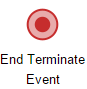
Events - Example
Let's take the following design for example, where the first process starts a case with the "Negotiate Contract" task inside the "Contracting Firm" pool. Then, it sends a message through a send message intermediate event that triggers the second process inside the "External Auditor" pool. As you can see in the design, when the second process reaches the send message intermediate event, it throws a message that returns to the first event of the first process, which has remained paused waiting for this message before continuing its execution.
The message types created for these processes are the following:
The "ContractMessage" message type for the "Send Contract" send message intermediate event and the "Receive Contract" receive message start event.

The "MessageVerifiedContract" message type for the "Send Verified Contract" send message end event and the "Receive Verified Contract" receive message intermediate event.

Each task in the example has its own steps (Dynaforms, triggers, output and input documents) assigned for end users to work with during the execution of the process. Since this example is intended to show how the events function, the steps of the tasks will not be shown in the explanation.
The configuration of the "Send Contract" send message intermediate event is the following:

The configuration of the "Receive Contract" receive message start event is the following:

The message type used is "ContractMessage", which will store values from one of the steps of the first task in the first process in the pool "Contracting Firm". The event "Send Contract" will send the values of these variables through the message to the other process in the pool "External Auditor" and will be received by the event "Receive Contract", which will assign the values sent in the message to its own variables used in the process and will start the process.
The configuration of the "Send Verified Contract" end event in the External Auditor pool, which will send the information to the Legal and Accounting department before signing the contract, is the following:

The configuration of the catching event "Receive Verified Contract", which will receive the message from the second process to continue the contracting process, is the following:

Now, let's run a case of the process. Take into account that this example is only intended to show how the events work between two processes. To start the process go to Home > New Case > Contracting Process (Negotiate Process)

The steps of the first task "Negotiate Contract" will be executed, then the send message event "Send Contract" will send the "ContractMessage" message to the second process in the pool "External Auditor" to start a new case. Then, the flow will go to the "Receive Verified Contract" intermediate event, which will pause the case until a message is sent from the second process. This event will show the following message to indicate that:
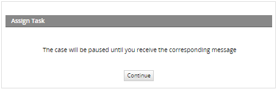
After clicking on Continue, the task "Authorize Contract" will not be shown in the inbox of the assigned email address until the messageeventcron file is executed and messages are received by the events.
In the second process, the message start event "Receive Contract" will catch the message from the "Send Contract" event and start a new case of this process after the cron is executed. Let's execute the cron.

Now, the person assigned to the first task will receive the case in their inbox.

To continue the entire "Contracting Process", the second process must be completed until the end event "Send Verified Contract" is reached and sends a message to the "Receive Verified Contract" event to continue the execution of the first process. After the second process ends, the cron must be executed again:

The message in the console Total cases continued: 1 indicates that the case is now listed in the inbox of the user assigned to the task "Authorize Contract":

From there on, the case must simply continue the execution of the rest of the tasks in the first process until the empty end event is reached.
Events Troubleshooting
For message events, the message type in both processes must be the same. Cases of processes whose events are not configured correctly can not be recovered.
For events that have not been configured correctly, the message shown for these cases when running the messageeventcron file is the following:

In order for Start Timer and Intermediate Timer Events to work correctly, the time zone must be the same in all three places:
- The
date.timezonesetting in the php.ini file on the ProcessMaker server. - The Time Zone found at Admin > Settings > System in ProcessMaker (or
time_zonein the env.ini file on the ProcessMaker server). - The time zone of the ProcessMaker server.
Note: The time zone on Linux/UNIX machines can be found with the
datecommand:$ date Wed Oct 12 16:49:26 BOT 2016
If the time zones are different, then Start Timer Events will not initiate new cases, and cases with Intermediate Timer Events will not advance.
For example, if using Eastern Standard Time in the US, then set the php.ini file on the ProcessMaker server to use the following configuration:
Then, log in with a user, such as "admin", who has the PM_SETUP_ADVANCE permission in his/her role and go to Admin > Settings > System. Set the Time Zone to America/New_York.

To avoid using the graphical interface to set ProcessMaker's time zone, the time zone can also be set in the env.ini configuration file, which is automatically created when a user clicks on Save in the Admin > Settings > System page. This env.ini file can also be manually created to set the time zone. When the timereventcron.php script is executed, it will use the time zone set in the env.ini file to process the timer events in the pending cases.
If an error occurs while executing one of the cron scripts, then it will be logged in the shared/log/cronError.log file, which is created the first time an error occurs.